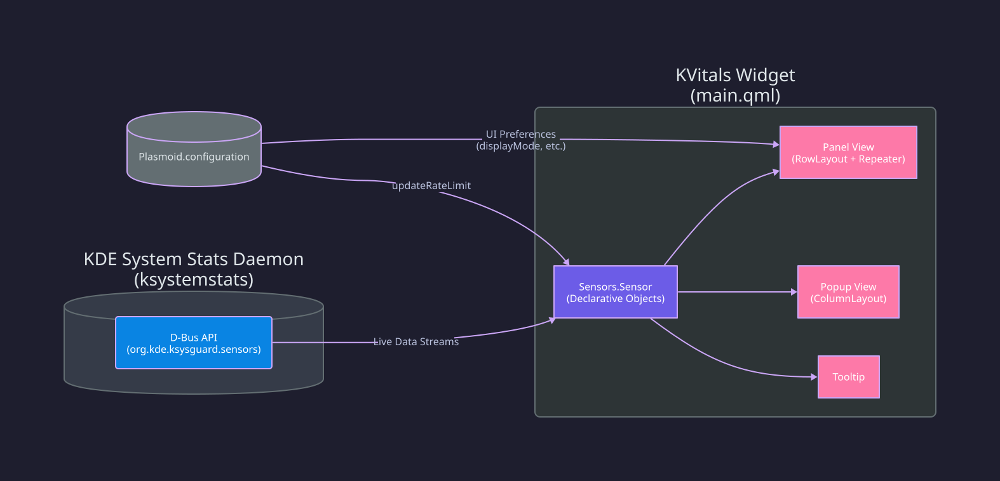

Architecture¶
KVitals is a KDE Plasma 6 widget (plasmoid) with a simple two-layer architecture: a bash data collector and a QML UI.
Data Flow¶

sys-stats.sh¶
The bash script collects all system metrics and outputs a single JSON object. It is invoked periodically by the QML DataSource at the configured update interval.
Data Sources¶
| Metric | Source | Method |
|---|---|---|
| CPU | /proc/stat |
Delta-based calculation between two reads |
| RAM | /proc/meminfo |
MemTotal − MemAvailable for used, MemTotal for total |
| Temperature | 4-tier fallback | thermal_zone → hwmon → lm-sensors → generic |
| Battery | /sys/class/power_supply/ |
Reads capacity and status |
| Power | /sys/class/power_supply/ |
power_now or current_now × voltage_now |
| Network | /proc/net/dev |
Delta-based RX/TX bytes between two reads |
Temperature Detection¶
Temperature detection uses a priority-based fallback:
- thermal_zone — Matches
x86_pkg_temp,k10temp,zenpower,coretemplabels - hwmon — Matches
coretemp,k10temp,zenpower,zenergy,amdgpudrivers - lm-sensors — Parses
Package id 0,Tctl,Tdie,Tccd1 - Generic fallback — First available thermal zone
Note
The script tries each tier in order and uses the first one that returns valid data. This ensures compatibility with both Intel and AMD systems.
JSON Output¶
{
"cpu": "26",
"ram_used": "8.8",
"ram_total": "39.0",
"temp": "52",
"bat": "78",
"bat_icon": "🔋",
"power": "20.5",
"power_sign": "+",
"net_down": "82.2K",
"net_up": "58.9K"
}
QML UI (main.qml)¶
The widget has three visual representations:
Compact Representation (Panel)¶
A RowLayout with a Repeater that renders each enabled metric as:
- Icon (optional, via Kirigami.Icon with isMask: true)
- Label (optional, e.g., "CPU:")
- Value (always shown, e.g., "26%")
- Separator (| between metrics)
Visibility of icons/labels is controlled by the displayMode property.
Tip
Icons use isMask: true to render as monochrome, matching the panel's text color regardless of the icon theme.
Full Representation (Popup)¶
A ColumnLayout with a Repeater showing a detailed row per metric with label and bold value, displayed when clicking the widget.
Tooltip¶
Multi-line text showing all enabled metrics, displayed on hover.
Configuration System¶
config/main.xml ← Config schema (entry names, types, defaults)
config/config.qml ← Tab registration (General, Metrics, Icons)
ui/configGeneral.qml ← General tab (display mode, font, interval)
ui/configMetrics.qml ← Metrics tab (show/hide toggles, network interface)
ui/configIcons.qml ← Icons tab (per-metric icon picker)
All config values are accessed in main.qml via Plasmoid.configuration.<key>.
Adding New Config
When adding a new config entry, you only need to: add it to main.xml, create a UI control in the appropriate config tab, and bind it in main.qml. No build step needed.
Project Structure¶
kvitals/
├── metadata.json # Plasmoid metadata (name, version, id)
├── install.sh # Local install script
├── install-remote.sh # Remote install (curl/wget)
├── CHANGELOG.md # Version history
├── docs/ # Documentation
│ ├── installation.md
│ ├── configuration.md
│ ├── architecture.md
│ ├── contributing.md
│ └── troubleshooting.md
└── contents/
├── config/
│ ├── config.qml # Tab registration
│ └── main.xml # Config schema
├── scripts/
│ └── sys-stats.sh # System stats collector
└── ui/
├── main.qml # Widget UI
├── configGeneral.qml # General settings tab
├── configMetrics.qml # Metrics settings tab
└── configIcons.qml # Icons settings tab